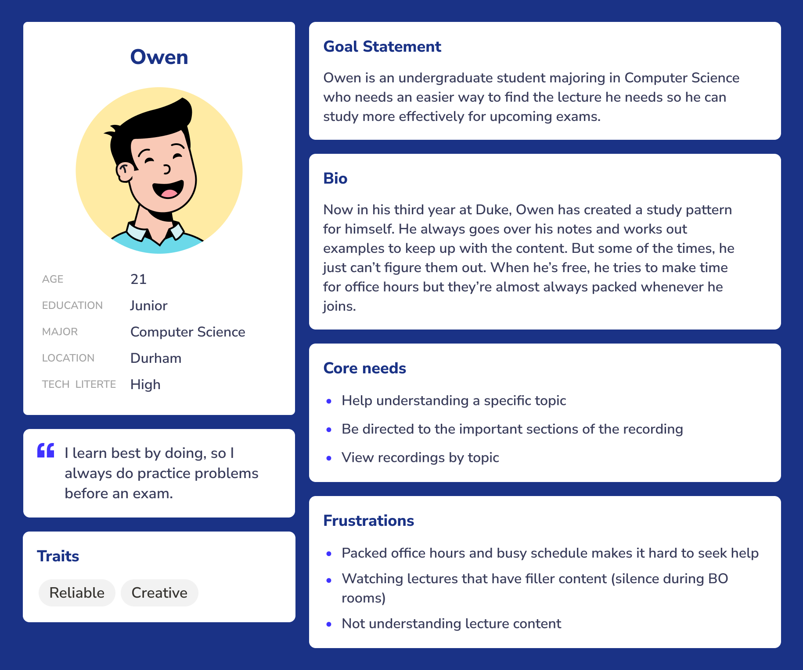
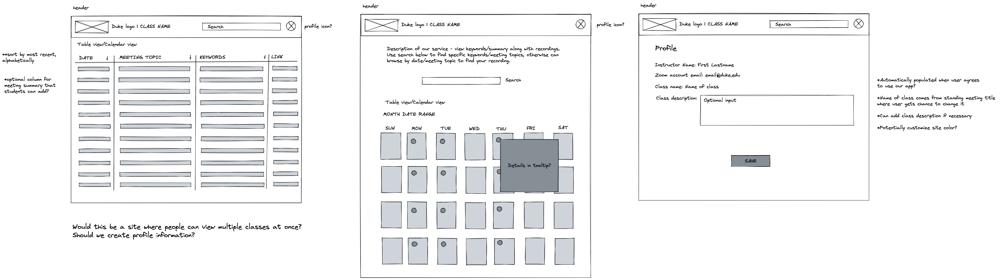
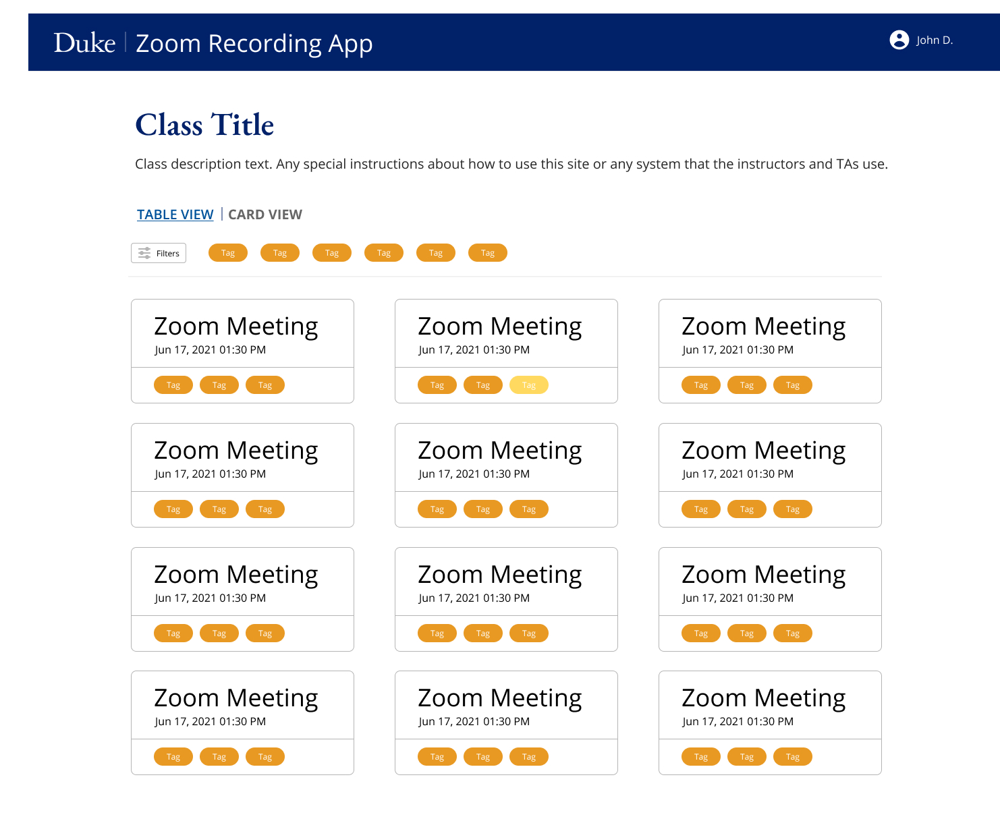

ReView
An easy way to organize class recordings.

This summer, I had the opportunity to work with a team of four other Duke students to improve how we use Zoom for education. The project spanned 10 weeks from scope definition to concept testing.
(Helen Xu, Akash Mullick, Benjamin Asomani, Alice Wu)
Overview
About the Program
Over the past year, Zoom has played an integral role in everyday communications at Duke and across the globe. Utilizing mobile technology and the Zoom Developer Platform, we worked with Duke OIT and other partners across campus to develop a web app to evolve Zoom’s presence and capabilities within higher education.
There are currently 40,000 licensed users at Duke who, during the month of April, held between 8,000 and 10,000 meetings a day.
About the Scope
We were tasked with developing an educational app that further enhances the collaborative efforts between instructors and students, as well as opening the door to new resources supporting education. With almost a full year of hindsight available, we can begin to fill in the gaps of where Zoom can be improved to meet Duke’s needs of providing a hybrid/remote teaching and learning experience that rivals that of an in-person offering.
Our Stakeholders:
For our project, we regularly communicated with our three stakeholders:
- Jeremy Petranka, the Assistant Dean of the Master of Quantitative Management (MQM) and Master of Management Studies (MMS) programs at the Fuqua School of Business, Duke University
- Charley Kneifel, the Chief Technology Officer (CTO) at OIT
- Chris Lorch, a Learning Technology Analyst from Duke Learning Innovation
As we developed our project, they gave us feedback on our project scope, use cases, and designs.
Research
Understanding the Scope
At the start of our project, our initial guidance was to create a web app that could improve the capabilities of Zoom for education. Within our team, we brainstormed potential avenues that we could explore. We also met with our stakeholders to evaluate what they deem to be the potential areas of improvement.

Some of the ideas we were considering as we thought about common pain points users have experienced with Zoom.
After receiving this information, we narrowed down our ideas to only the most relevant and sorted them based on feasibility. From this, we were able to identify our problem for the summer:
It's difficult to navigate through and find the right Zoom recording.
-
1. Lack of context:
Recordings are only titled by the meeting name and date. When using a recurring meeting, all recordings will have the same title -
2. Lack of organization:
It's difficult to arrange zoom recordings and course content in the same place. -
3. Lack of search features:
Most of the time, the fastest way to find the video you're looking for is when you already have the video in mind. Otherwise, it's a lot of trial and error.
Users and Audience
We identified six types of users that could potentially benefit from an educational recording management tool.
-
Student 1:
Studies regularly and frequently asks questions about the material -
Student 2:
Studying for an exam and gets questions about some specific topics wrong repeatedly -
Student 3:
Too busy with classes and other commitments, tends to be the one cramming the days before an exam -
Teacher 1:
Sees a lot of redundancy in own teaching strategy and finds that students tend to ask the same sorts of questions -
Teacher 2:
Needs help managing Zoom account and deciphering different recordings -
Employee:
Attends meetings regularly and needs a better way to keep track of progress in different projects
For our project, we decided to tailor our app to Student 1 (Nina) and Student 2 (Owen).

Nina is an undergraduate student majoring in Neuroscience who needs a fast method to search through videos so she can complete notes she missed during class.
Owen is an undergraduate student majoring in Computer Science who needs an easier way to find the lecture he needs so he can study more effectively for upcoming exams.
User Surveys
To validate our scope and understand potential solutions, we conducted a survey of the Duke undergraduate student body and received 19 responses. Our hypotheses were that:
- A) Students find watching course recordings useful
- B) Students watch course recordings to study, not just as a way to skip live sessions
- C) Students felt that the current way of sorting through recordings is time-consuming and difficult
At a high-level, we saw that students were accustomed to watching recordings from their Zoom lectures
for
a variety of purposes, including studying and making up missed lectures.
These results were somewhat surprising! While Duke currently has tools in place like Piazza that allow students to collaborate and ask questions for each other and professors, we were unsure of how willing they would be to add their own thoughts to lecture content. This result opened up possibilities for our future functionalities as we found that students would be more likely to find the recording they are looking for if they have some identifying feature.
Solution
We thought of some “How might we” questions and collaborated with our project leads to brainstorm solutions:
- How might we help students understand their course material better with limited time?
- How might we help instructors organize their content in one place?
- How might we create a classification system of recordings with low effort?
We also explored the current solutions in place, like the Zoom integration through the Sakai LMS and Panopto which is a popular tool for managing videos, and indirect competitors like Piazza and Gong. What we saw was there were common elements that made posts/videos stand out:
- Title (which currently is just the Zoom meeting ID)
- Date
- Keywords (from Piazza, which allows you to tag posts into categories)
Through collaborative sessions, we decided on our question to be: How might we create a web-app that allows students and instructors to easily categorize and navigate to previous recordings?
Out of this question, we came up with Review.
ReView is a web app that uses video transcripts to summarize class recordings and tag key topics to make studying for tests and understanding material covered in each lecture easier with minimal effort by the professor. ReView not only functions as a study tool, but as a way to help professors organize recording content, make class materials more accessible, and create a way to increase engagement with course content.
By applying natural language processing on Zoom video transcripts we can autogenerate summaries and keywords. Our web-app can then act as a crowdsourcing platform to have students, the users, to update content, add their own notes, and watch videos - all in the same place.
Design Process
Wireframes
First, I sketched out the necessary components.
Mockups
After critiquing the wireframes as a group, we started generating lo-fi mockups to better visualize our app.


With more feedback, we solidified our base design and moved on to hi-fi mockups to better represent our designs.


As we were inputting and testing data with our prototype, we found that the table was getting a bit long. We decided to add a second view, a card view, that’s common in similar services like Panopto or Notion. We also experimented with different styles to better align with Duke's style guide.

Stakeholder Feedback
From the faculty point of view, they’d like to see what students are doing on their site. For us to understand that, we had to be able to implement roles - identification of the user into either a student or faculty. This insight adapted both the infrastructure and design of our app.
User Testing
Using real-life data from youtube transcripts from a math class one of our team members took in the spring semester. We interviewed 11 students, asking them to give us their impressions of the app and complete a few tasks. Some tasks included:
- Find the title of a lecture that occurred on a specific date.
- Indicate that a specific keyword is relevant to a lecture.
- Add your own thoughts from the lecture to the recording page.
The results were surprising! Users were able to identify issues in flow (like the navigation not having a home button) that we were unsure of, and supported design decisions like having a list view and a card view. We also found that 45% of users would be more likely to edit a section called “Notes” than “Summary” because a summary is supposed to be a concise 1 or 2 sentence statement.
Students also noted that they were unsure how to differentiate between autogenerated content and teacher approved content, which gave us more to think about. We took all the suggestions that came out of the user testing and ranked them according to priority (which was determined partly by how many users ran into the same problem) and feasibility (how much effort it would take to implement the feature). We then systematically addressed this feedback for the remaining time of our project.
Final Design
View a short video describing our project below or watch our Code+ final presentation!
Reflection
As my first team project, I learned a tremendous amount from Code+. First and foremost, I learned a lot
about
cooperation with team members, which was an interesting challenge participating in this program through a
hybrid
environment (2 of our team members were on campus and the rest of us were remote). I also gained valuable
experience pacing our workload against a deadline.
Because this was one of the first projects I’ve had to scope out myself, I saw firsthand the importance of
prioritization. There were so many interesting and ambitious ideas that we had, especially with a
product
like Zoom that we’ve all become so accustomed to using, so it was definitely a challenge deciding which to
tackle first.
Despite our program only lasting 10 weeks, I felt as though we made incredible progress and learned so
much.
I’m
so thankful for the opportunity to work with my talented team, and I look forward to seeing our project
one
day
impact the Duke community!
Next Steps
For our app, we hope to respond to stakeholder and user feedback by implementing multi-platform support and advanced admin features. We hope to continue doing more user testing with longer 75-minute class data to evaluate the accuracy of our auto generated tags and summaries. We hope to update our web app and beta test it in classes during the fall and spring semester to evaluate if it can be used as an alternative to the current solution.